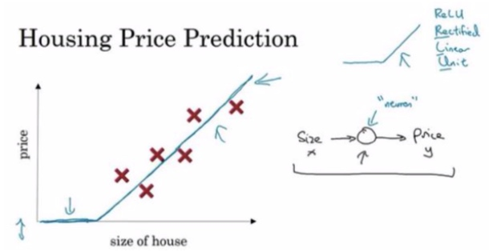
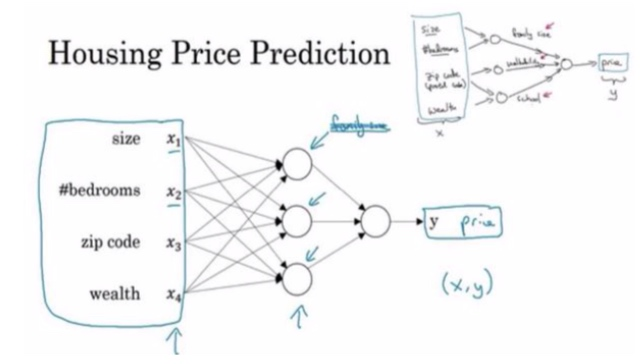
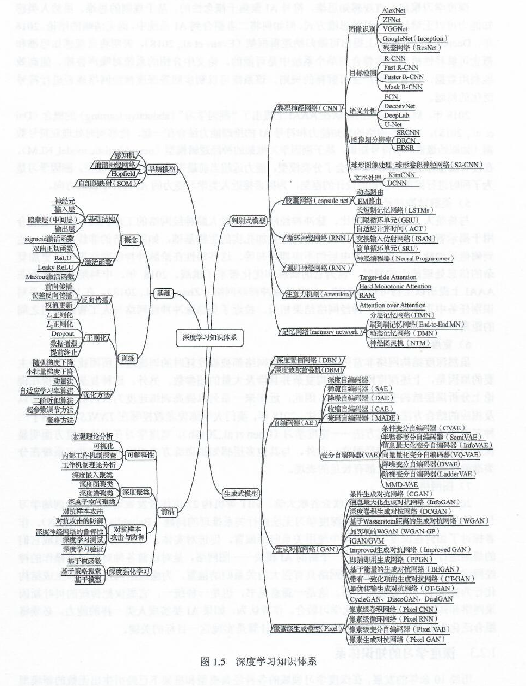
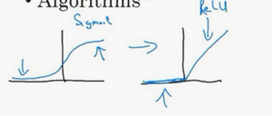
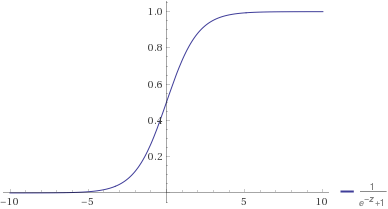
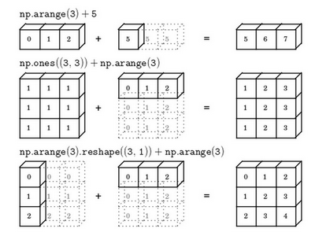
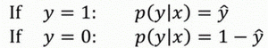

CS230-DL 深度学习课程笔记
Contents
- 0 开始
- 1 神经网络和深度学习
- 2. 神经网络编程基础
- 2.1 符号定义
- 2.2 逻辑回归 Logistic Regression
- 2.3 逻辑回归代价函数 Cost Function
- 2.4 梯度下降算法 Gradient Descent
- 2.5 导数 Derivatives
- 2.6 逻辑回归中的梯度下降 Logistic Regression Gradient Descent
- 2.7 m 个样本的梯度下降 Gradient Descent on m Examples
- 2.8 向量化 Vectorization
- 2.9 Numpy 编程小技巧和 Jupyter notebook
- 2.10 Logistic 损失函数的解释 Explanation of logistic regression cost function
CS230 是吴恩达老师推出的深度学习课程。在这门课中，学生将可以学习到深度学习的基础，学会构建神经网络，并用在包括吴恩达本人在内的多位业界顶尖专家指导下创建自己的机器学习项目。 CNN、RNN、LSTM 等都有涉及。本篇是我的关于该课程的学习笔记，更新中 …
0 开始
0.1 环境配置
Anaconda3Python 包管理软件Windows 10可能是宇宙最好用的操作系统VSCodewithRemote Development论在机房运行代码Zotero收纳论文
0.2 参考资源
1 神经网络和深度学习
1.1 什么是神经网络
假如，我们需要根据面积预测房价，于是收集了一些真实的数据，

为了完成预测，最简单的方式是根据这些数据做下线性回归，得到上图中的蓝色直线，然后修正下房价为 0 的情况。注意这里的流程是先判断可以做线性回归，然后找到这条线。（ps，这个函数其实非常有名，一般管它叫 ReLU 激活函数，全称 Rectified Linear Unit）
而对于神经网络而言，逻辑就有所变化。我们不需要关心函数的形式，也不需要深奥的数学理论，只需要如同组装乐高积木一般组合若干及其简单的神经元，再提供足够数量的数据，便可以做出较好的预测。

1.2 什么是监督学习
上一小节的例子便是一种监督学习。简单来说，监督学习就是给了标准答案的机器学习过程。教科书中这样描述监督学习，“监督学习是利用有标签的数据样本进行训练的一种机器学习方法。因为它所利用的训练样本集的标签是人工添加的，在训练前已知，因此它被称为监督学习”。
1.3 什么是深度学习
深度学习（英语：deep learning）是机器学习的分支，是一种以人工神经网络为架构，对数据进行表征学习的算法。
《深度学习》中对深度学习的体系做出了如下归纳

1.4 深度学习为啥突然火了
数据多了
计算能力强了，GPU
方法的改进
sigmod 改为 ReLU

2. 神经网络编程基础
2.1 符号定义
$x$：表示一个$n_x$维数据，为输入数据，维度为$(n_x,1)$；
$y$：表示输出结果，取值为$(0,1)$；
$(x^{(i)},y^{(i)})$：表示第$i$组数据，可能是训练数据，也可能是测试数据，此处默认为训练数据；
$X=[x^{(1)},x^{(2)},…,x^{(m)}]$：表示所有的训练数据集的输入值，放在一个 $n_x×m$的矩阵中，其中$m$表示样本数目;
$Y=[y^{(1)},y^{(2)},…,y^{(m)}]$：对应表示所有训练数据集的输出值，维度为$1×m$。
2.2 逻辑回归 Logistic Regression
逻辑回归是一个适用于二分类问题的算法。
二分类算法是给定一个输入特征向量 $X$ ，输出 $\hat{y}$ ，代表对实际值 $y$ 的估计，具体的说，表示 $y$ 等于 1 的概率。
逻辑回归有两个参数：
- $w$ 逻辑回归参数，或者说特征权重（维度与特征向量相同）
- $b$ 一个实数，表示偏差。
公式如下：
$$
\hat{y} = \sigma \left( { {w}^{T}}x+b \right) \
\sigma \left( z \right)=\frac{1}{1+{ {e}^{-z}}}
$$

2.3 逻辑回归代价函数 Cost Function
2.3.1 损失函数 Loss Function
损失函数又称误差函数，用来衡量算法的运行情况。
一般来说，损失函数会定义为预测值和实际值差的平方，或者差的平方的一般，但一般在逻辑回归中用到的损失函数定义为如下形式：
$$
L\left( \hat{y},y \right)=-y\log(\hat{y})-(1-y)\log (1-\hat{y})
$$
这是为了适应梯度下降算法，使用差平方的话，函数是非凸的，梯度下降算法可能找不到全局最优值。
2.3.2 代价函数 Cost Function
损失函数是相较于单个样本而言的，而为了衡量算法对于所有样本的运行情况，引入了代价函数。代价函数被定义为所有样本的平均损失函数：
$$
J\left( w,b \right)=\frac{1}{m}\sum\limits_{i=1}^{m}{L\left( { { {\hat{y}}}^{(i)}},{ {y}^{(i)}} \right)}=\frac{1}{m}\sum\limits_{i=1}^{m}{\left( -{ {y}^{(i)}}\log { { {\hat{y}}}^{(i)}}-(1-{ {y}^{(i)}})\log (1-{ { {\hat{y}}}^{(i)}}) \right)}
$$
在训练逻辑回归模型时，我们的任务是学习到合适的 $w$ 和 $b$ ，使得代价函数的值最小。那如何训练呢？常用的是一种被称为梯度下降的方法。
2.4 梯度下降算法 Gradient Descent
为了简化表示，假设作为凸函数的代价函数图案如下：

初始化 $w$，然后不断循环的做如下计算

$:=$ 海象表达式，这里表示更新参数
$\alpha$ 学习率 learning rate ，用来控制步长 step
可以发现，$w$ 在这个更新过程中不断朝左移动，直到逼近最小值点：

如果 $w$ 初始化在左侧，同理。
逻辑回归的 Cost Function 为 $J(w,b)$，相应的更新迭代计算为：

$\partial $ 是偏导符号（求导符号在多元函数下的特殊写法），读作 round、partial 或者 dee都可以。
另外，在编程的时候，为了方便，$\frac{\partial J(w,b)}{\partial w}$ 会直接写作 dw
2.5 导数 Derivatives
略。
- 导数就是斜率。
- 如果你要求一个函数的导数，可以自己求、查课本、查维基百科或者试试 WolframAlpha ?
2.6 逻辑回归中的梯度下降 Logistic Regression Gradient Descent
假设样本只有两个特征 $x_1$ 和 $x_2$，输入参数为 $w_1$ 和 $w_2$，此时，计算图如下：

反向依次计算导数：
$\frac{da}{dz}=a\cdot (1-a)$
$da = \frac{dL(a,y)}{da}=-y/a+(1-y)/(1-a)$
$dz=\frac{dL(a,y)}{dz}=(\frac{dL}{da})\cdot (\frac{da}{dz})=a - y$
$d{ {w}{1}}={ {x}{1}}\cdot dz$
$d{ {w}{2}}={ {x}{2}}\cdot dz$
$db=dz$
相应的，更新函数如下：
${ {w}{1}}:={ {w}{1}}-\alpha\cdot d{ {w}{1}}$，
${ {w}{2}}:={ {w}{2}}-\alpha\cdot d{ {w}{2}}$，
$b:=b-\alpha\cdot db$。
2.7 m 个样本的梯度下降 Gradient Descent on m Examples
m 个样本的整体损失函数被定义为：
$$
J(w,b)=\frac{1}{m}\sum\limits_{i=1}^{m}{L({ {a}^{(i)}},{ {y}^{(i)}})}
$$
而将上一节中单样本梯度下降应用到 m 个样本上，可以总结为如下伪代码：
1 | J=0;dw1=0;dw2=0;db=0; |
但这段代码中存在两处for循环（如果把针对每个特征计算梯度算作一个 for 的话），事实上这两个 for 可以利用一种称作 向量化 的技术去除，使得计算更快的执行。
2.8 向量化 Vectorization
向量化往往能加速运算，原因在于一些高级编程语言的类库在处理向量化的运算时能充分利用现代 GPU 或者 CPU 的并行化 API。
2.8.1 Python Numpy 的广播机制
Numpy 为了计算方便，引入了广播机制 broadcasting，类似于 Matlab/Octave 的 bsxfun 函数。简单来说，广播机制能够自动扩充矩阵，使运算正确进行。广播机制可总结为下图：

2.8.2 Logistic Regression 前向传播
$Z = [z^{(1)} z^{(2)}…z^{(m)}]$
$Z = w^{T}X+[b b…b]$
$(1, m) = (1,n_x)\cdot(n_x, m)+(1,m)$
在 Python 中，利用 numpy 的广播特性，代码如下：
1 | Z = np.dot(w.T, X) + b |
Logistic Regression 反向传播
$Z = w^{T}X + b$
$A = \sigma( Z )$
$dZ = A - Y$
${ {dw} = \frac{1}{m}X\cdot dZ^{T}\ }$
$db= \frac{1}{m}np.sum( dZ)$
$w: = w - \alpha \cdot dw$
$b: = b - \alpha \cdot db$
2.9 Numpy 编程小技巧和 Jupyter notebook
广播特性可能引入难以调试的bug。一些技巧可以一定程度上避免错误发生。
- 避免使用
Python1维数组。如用np.random.randn(5,1)代替np.random.randn(5)，前者是一个矩阵，而后者是一个 1 维数组。在 Python 中调用一维数组的转置会返回一维数组，此时，若 n 是一个一维数组，计算np.dot(a, a.T)会错误的使用传播特性返回一个矩阵，而非向量的内积。 - 善用
reshape和assert。如assert(a.shape == (5,1))
Jupyter notebook 是一个将 Python 交互式 shell 和 Markdown 结合的工具，能使你快速地实现代码并且查看输出结果，便于学习。最新版本的 VSCode 已经内置了 notebook 功能。
2.10 Logistic 损失函数的解释 Explanation of logistic regression cost function
前面直接给出了 Logistic 损失函数的定义，即：
$$
L\left( \hat{y},y \right)=-y\log(\hat{y})-(1-y)\log (1-\hat{y})
$$
这里给出简单的推导：
注意 $y$ 的取值为 ${0,1}$ ，因为 $\hat{y}=p(y=1|x)$，故：

上述两式可以合并为，$p(y|x)={\hat{y}}^{y}{(1-\hat{y})}^{(1-y)}$, 不难看出，无论是 $y=0$ 或 $y=1$ 时，我们都想最大化 $p(y|x)$。
对上式取下对数，得到：$log(p(y|x))=ylog\hat{y}+(1-y)log(1-\hat{y})$，为保持语义上的一致，填上符号，就得到了前述的损失函数定义，
假设所有样本服从同一分布且相互独立，样本的联合概率为：
$$
P\left(\text{labels in training set} \right) = \prod_{i =1}^{m}{P(y^{(i)}|x^{(i)})}
$$
进行极大似然估计（找到一组参数，使得给定样本的观测值最大），填上负号，就推导出了 Logistic 回归的代价函数：
$$
J(w,b)= \sum_{i = 1}^{m}{L(\hat y^{(i)},y^{\hat( i)})}
$$
Author: Tilden Ji
Link: https://tilden.cn/2019/cs230-deep-learning-notes/
License: 知识共享署名-非商业性使用 4.0 国际许可协议